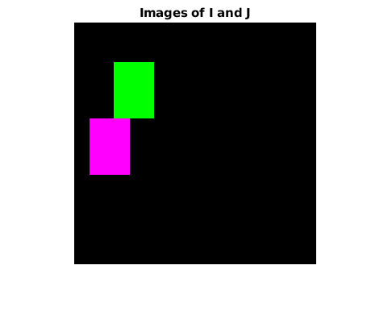
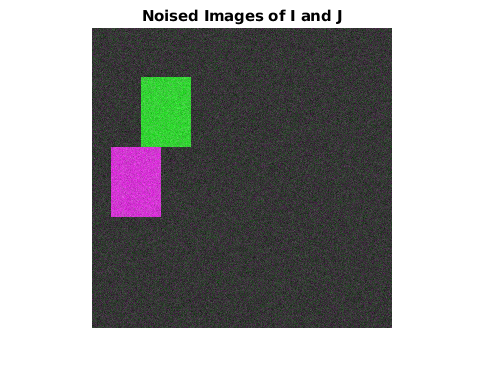
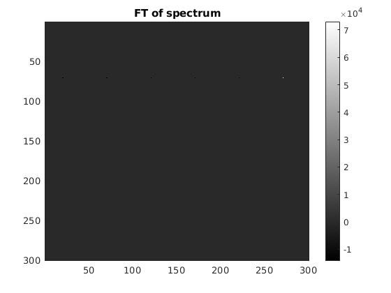
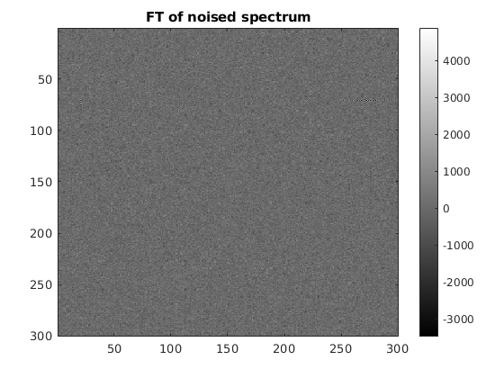
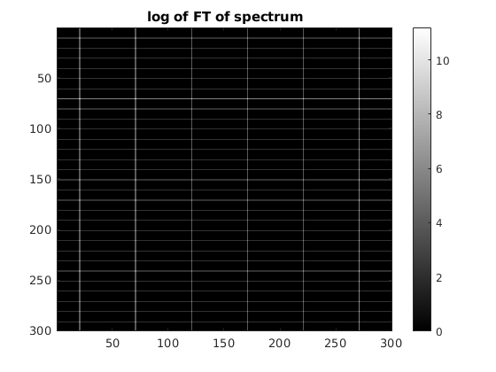
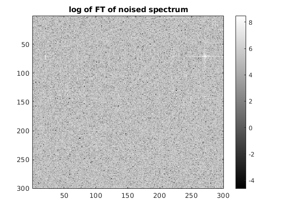

Contents
FFT-Based Technique
Parameters
sz= 300; up = 70; low = 50; pos = 50; pos1 = 120; pos2 = 20;
create images
%image I img_I = zeros(sz,sz); img_I(pos:pos+up-1,pos:pos+low-1) = 255; %image J img_J = zeros(sz,sz); img_J(pos1:pos1+up-1,pos2:pos2+low-1) = 255;
Fourier transforms
FT_J = fftshift(fft2(img_J)); FT_I = fftshift(fft2(img_I));
Cross power Spectrum
spect = (FT_I.*conj(FT_J))./(1e-5 + abs(FT_I).*abs(FT_J)); FT_spect = real(fft2(spect)); log_FT_spect = log(abs(FT_spect));
Noised Image
%% noised image noised_img_I = img_I + 20*randn(sz); noised_img_J = img_J + 20*randn(sz); %Fourier transform noised_FT_J = fftshift(fft2(noised_img_J)); noised_FT_I = fftshift(fft2(noised_img_I)); %Cross power Spectrum noised_spect = (noised_FT_I.*conj(noised_FT_J))./(1e-5 + abs(noised_FT_I).*abs(noised_FT_J)); noised_FT_spect = real(fft2(noised_spect)); noised_log_FT_spect = log(abs(noised_FT_spect));
Display All Images
  
 